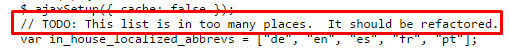

This is a brief topic, but it’s still incredibly important; in the same way that you might undergo safety training for a real-world job to ensure you perform it efficiently without error, there are standards you should adhere to in web-development that will ensure future compatibility and application of your services. I’m going to provide you with a run-down so you know the qualitative benchmark for your work, and point you to several links that you may treat as ‘terms and conditions’ documentsyou mightn’t really read them, but at least they’re there for when you need them.
| Standards enforce good practice globally, and are maintained by bodies of people. |
| They ensure that machines understand how to communicate, as a lot of the internet's traffic is non-human. |
Accompanying this period of tremendous growth, has been an awareness that the web needs some sort of guidance in order to keep the web open and accessible. Compliance with standards sets a generality that enables things such as design for disabled users, and portability.
Practically, you as a web-developer benefit from being concerned with these standards because they allows other to access your content in a pre-defined way; this leads to better indexing by search-engines, and allows new releases to be mindful of past versions of your content. They’re so important, that the 'WaSPweb standards project' have compiled comprehensive information about them in order to try and enforce the view that web-standards should continue to be de facto. The advantages will be explored in-depth here.
In general, whomever authors a language is also responsible for its upkeep- the W3C maintains the interoperability of web-related products such as HTML and CSS. ECMAScript, the more formal ‘Javascript’, is maintained by ‘Ecma Internationalan association founded 1961 in order to meet the need for standardising computer operational formats’- this script allows you to modify the document-object-model (ergo, all of your HTML elements) in real-time without having to reload the page. Furthermore, the IETF‘internet engineering task force’… bad. ass. keep TCP/IP going.
“So what?”, you may flippantly grunt, scoffing at the notion of constantly having to update your methodology. Well, the consequences of letting your house of codes fall into disarray are numerous, and worrisome. As the WaSP states:
“You will restrict access to your site. How much business sense does it make to limit your audience to only a fraction of those who wish be a part of it? Denying access to even small portions of a target audience can make a big difference… For an educational site, it makes sense to allow access not only to affluent, able-bodied school-children with graphical browsers, but also to children in regions with poorly-developed infrastructure who are best served by text-only browsing, or disabled students using specialized browsers.”
Lesson-learned- be considerate, dude. Standards also bolster stability- design-wise, a website may suffer several iterations before reaching its destination- this means that teams of developers that you may find yourself a part of may receive poorlyreap what you sow, etc. maintained code.
Good. Now, ensuring you follow these standards doesn’t necessarily entail you reading hundreds of monotonous specification documents- DTDsboth strict (only containing current tags) and ‘transitional’(retaining deprecated ones), as covered, are also provided in a machine-readable format which means that there are several handy pistops on the web that allow you to automatically check your code. These validation tools parse your sources and compare them against these DTDs, hopefully alerting you of malpractice.
Importantly, HTML5 validation can be troublesome; the engines currently being used are experimental, and resultingly potentially inaccurate- as Louis Lazaris of 'ImpressiveWebs' put it, "we shouldn’t refer to it as a 'validator' anymore; it’s now more accurately referred to as a 'conformance checker'". This is because, with an influx of new tags and user-customisation of the language, checking cannot be done against a DTD, but instead must use pattern-matching to test if elements are formatted correctlythis means that even if your code doesn't incur any errors, it mightn't be perfect.
Sometimes, when delving the deeps of a website you may find errors in standards compliance yourself- there are a great many humorous and/or terrible things to find in source-code(similar to the odd things you can find on google maps). The code snippet below is teeming with errors, and showcases how not to go about things- it flaunts many of the principles we’ve so far covered- see if you can spot them all.